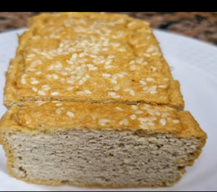

Yogurt Griego
Yogurt Griego
2 Ingredientes
Ingredientes
- 1 lt de leche
- 150 gr de yogur natural griego
Preparación:
- Calentar la leche hasta 60-70°
- Si no hay termómetro con el dedo contar hasta 5
- Incorporar el yogurt moviendo hasta integrar
- Pasar a un recipiente hermético
- Cubrir y guardar en un lugar oscuro y libre de corrientes de aire
- Después de 12 horas[mínimo] sacarlo
- Drenar por 12 horas más en el refrigerador
- Sacar y Envasar
 Plátano Verde
Plátano Verde
Torta para relleno 2 personas
Ingredientes
- 1 Plátano verde
- 100 gr de queso fresco
- [2 huevos]
- Se usa el queso o huevo solo uno
- sal
Probar con la mitad que es para una sola persona y una vez con queso y otra con huevo
Preparación:
- Rayar el plátano muy fino
- El Queso o huevo
- Unir todo, ponerlo en la sartén y extenderlo
- Cocinar unos 7 minutos por lado
- Rellenar con pollo, Palta, aceitunas o carne

Pan de AlmendrasEn microondas
Ingredientes
- 2 cdas de harina de Almendras
- 1 cda de aceite
- 1 huevo
- Una pizca de sal y pimienta
- 1 cda de leche o agua
- Relleno: Queso, jamón, tomate, orégano, puede añadirse ajo y perejil en polvo
- Probar también con 1/2 cdta de polvo de hornear
Preparación:
- En un tazón poner todos los ingredientes e integrarlos bien
- Pasarlo a un tazón engrasado o con papel para horno
- llevar al microondas 2.30 minutos+-
- Dejar enfriar un poco, cortarlo e incorporar el relleno
- llevarlo a la waflera para dorar
- Agregar el tomate si se prefiere crudo, Palta y servir
 Nube de Manzana
Nube de Manzana
Postre
Ingredientes
- Manzana 300 gr
- Agua 100 ml
- Miel
- Canela y Clavo
- Gelatina 20 gr
Preparación:
- Pelar y cortar las manzanas sancocharlas con canela y clavo
- Cuando este frio agregar la miel y gelatina y batir unos 15 minutos, hasta que doble o triplique el volumen
- En un molde forrado con papel de horno refrigerar 3 horas mínimo bien tapado
- Se decora con Chantilly, o fresa, o cualquier fruta